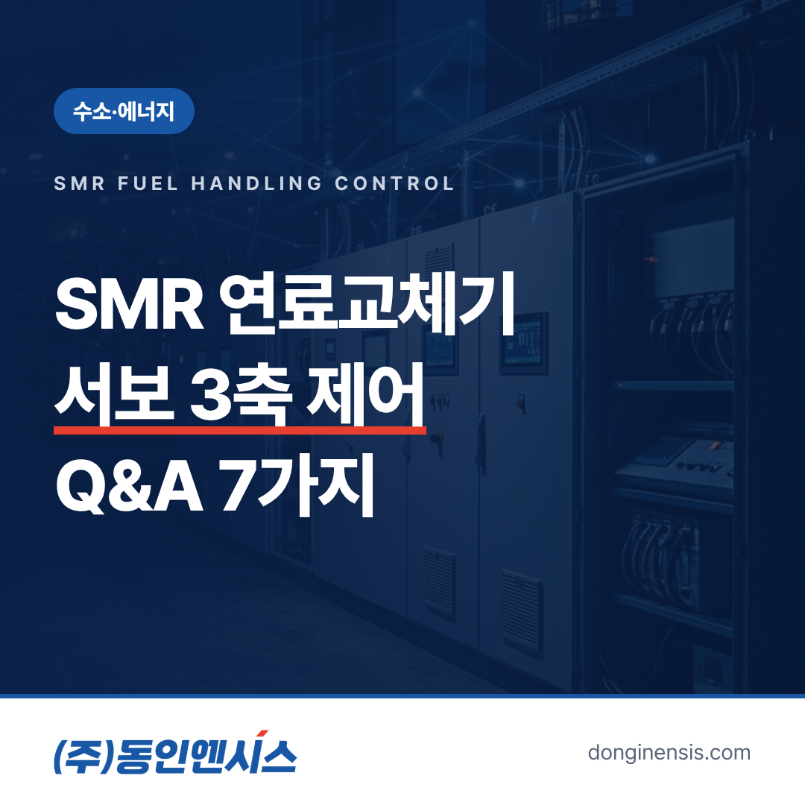
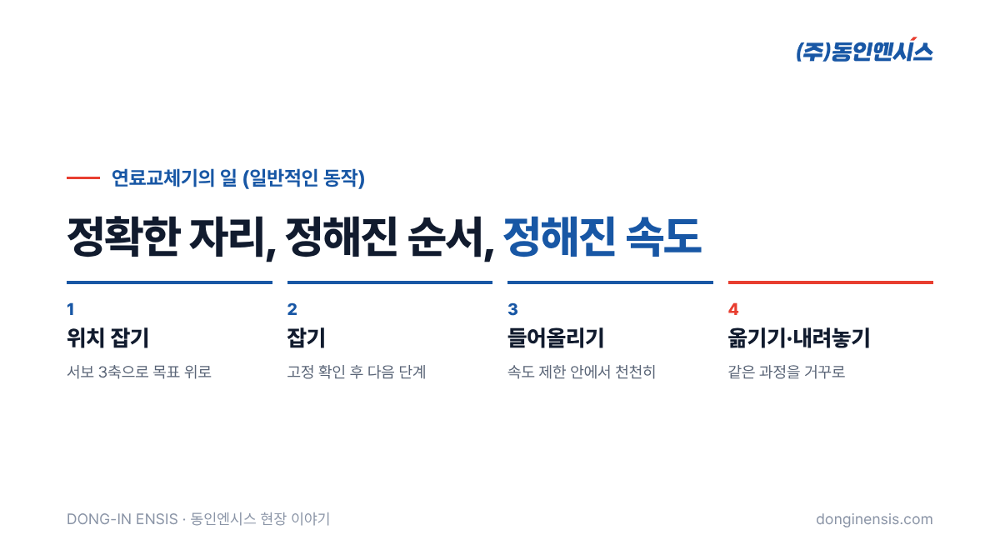
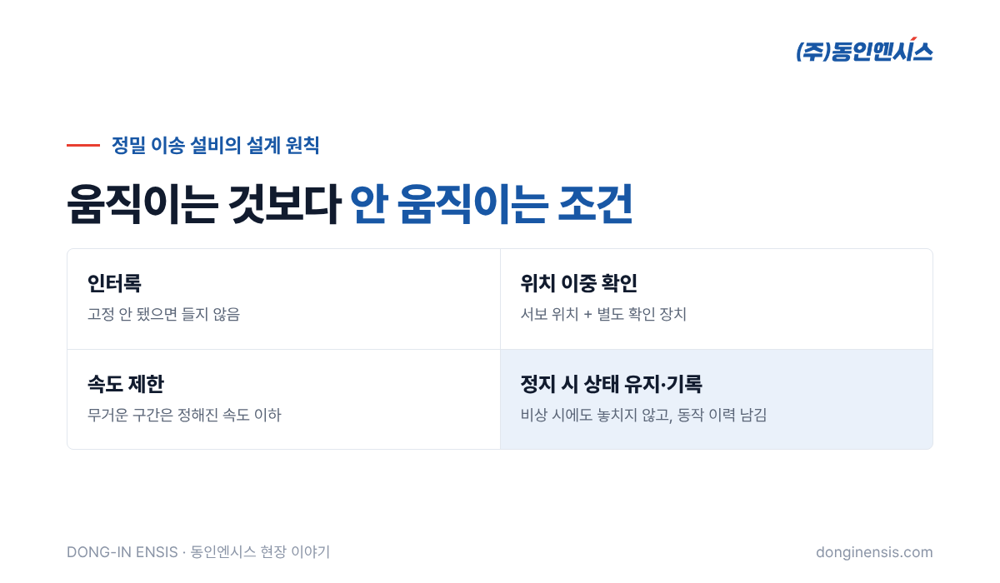

소형모듈원자로(SMR)는 요즘 에너지 분야에서 가장 자주 오르내리는 이름 가운데 하나입니다. 원자로라고 하면 거대한 돔과 냉각탑부터 떠오르지만, 그 안을 들여다보면 정밀하게 움직이는 기계 장치가 많습니다. 연료를 옮기는 연료교체기도 그중 하나입니다. 제어반을 직접 설계·제작하고 PLC 프로그램까지 짜는 동인엔시스는 파워엠엔씨의 SMR 연료교체기에서 PLC와 서보 3축, 인버터 제어를 맡았습니다. 이 경험을 바탕으로 SMR 연료교체기 제어에 대해 자주 받는 질문 일곱 가지에 답해 보겠습니다.
SMR은 Small Modular Reactor의 줄임말로, 이름 그대로 작고 모듈로 나뉜 원자로를 말합니다. 대형 원전처럼 현장에서 오랜 기간 거대한 구조물을 짓는 대신, 주요 부분을 공장에서 모듈로 만들어 옮겨 설치하는 방식을 지향합니다.
규모가 작아진다고 해서 요구되는 정밀함과 안전 기준이 낮아지는 것은 아닙니다. 오히려 좁은 공간에 장치가 촘촘히 들어가는 만큼, 각 장치가 정해진 위치와 순서를 정확히 지키는 것이 더 중요해집니다. 공장에서 모듈로 만든다는 것은 제어 장치도 미리 만들어 시험한 뒤 옮긴다는 뜻이기도 합니다. 제어반을 공장에서 설계·제작하고 시험까지 마쳐 내보내 온 회사에게는 익숙한 방식입니다.
원자로는 일정 기간 운전한 뒤 연료를 새것으로 바꾸거나 위치를 옮겨 줘야 합니다. 이 일을 하는 장치가 연료교체기입니다. 일반적으로 연료교체기의 일은 몇 가지 동작으로 나눌 수 있습니다.
사람이 직접 손을 댈 수 없는 환경에서 이루어지는 일이라, 원격으로 정확히 움직이는 기계와 그 기계를 다루는 제어가 핵심이 됩니다. 동작 하나하나는 단순해 보이지만, 모든 동작이 정해진 위치와 순서, 속도를 벗어나지 않아야 한다는 점이 이 장치의 본질입니다.

서보는 지령한 위치와 속도를 정확히 따라가도록 계속 스스로 보정하며 움직이는 모터 시스템입니다. 일반 모터가 '돌아라, 멈춰라'에 가깝다면, 서보는 '정확히 여기까지, 이 속도로'를 지키는 데 강합니다.
3축은 서로 다른 방향으로 움직이는 축이 세 개라는 뜻입니다. 일반적인 이송 장치라면 앞뒤, 좌우, 위아래처럼 공간 안에서 한 점을 찾아가는 데 필요한 방향을 각각의 축이 맡습니다. 세 축이 따로 놀지 않고 하나의 지령 아래 함께 움직여야 원하는 자리에 정확히 닿을 수 있습니다. 한 축이 먼저 도착하고 다른 축이 늦으면 경로가 흐트러지고, 무거운 것을 든 상태라면 흔들림까지 생깁니다. 그래서 축마다 가속과 감속을 어떻게 줄지, 어느 축을 먼저 움직이고 어느 축을 나중에 움직일지를 함께 설계합니다. 동인엔시스는 이 서보 3축을 PLC로 묶어 제어하고, 회전 속도 조절이 필요한 부분은 인버터로 다뤘습니다.
공장의 이송 로봇이나 크레인도 위치를 잡고 물건을 옮깁니다. 기본 원리는 같지만, 설계할 때 무게를 두는 곳이 다릅니다.
| 구분 | 일반 공장 이송 장치 | 연료교체기 같은 정밀 설비 |
|---|---|---|
| 먼저 따지는 것 | 속도와 생산량 | 정확도와 안전 |
| 동작 조건 | 대부분 자동 반복 | 단계마다 조건을 확인하며 진행 |
| 이상 시 | 멈추고 재시작 | 안전한 상태로 먼저 만든 뒤 판단 |
| 기록 | 생산 실적 위주 | 동작 이력과 상태를 꼼꼼히 |
빠르게 많이 옮기는 것보다 한 번을 정확히 옮기는 것이 중요한 설비라는 뜻입니다. 그래서 같은 서보와 PLC를 쓰더라도 프로그램의 짜임새가 크게 달라집니다. 정상 동작보다 '조건이 맞지 않을 때 무엇을 하지 않을지'를 적는 코드가 더 많아지는 것도 이런 설비의 특징입니다.
정밀 이송 설비에서 일반적으로 강조하는 원칙이 있습니다.

Photorealistic close-up photo of a precision gantry positioning system in a clean industrial test hall: black servo motors mounted on aluminum linear axes with rails and ball screws, cable chains, a light-grey control cabinet in soft focus behind, cool clean lighting, no people, no brand logos, no readable text. 3:2 landscape.
동인엔시스는 1991년부터 750건이 넘는 현장에서 제어반을 만들어 왔습니다. 액화수소충전소, 하이브리드 선박, 연료전지 발전소 주변설비, 그리고 이번 SMR 연료교체기까지, 공통점은 '틀리면 안 되는' 현장이라는 점입니다.
이런 현장에서는 설비를 움직이는 것만큼 설비가 어떻게 움직였는지를 정확히 남기는 일이 중요합니다. 모터와 서보의 상태를 읽고, 이상 징후를 놓치지 않고, 기록을 믿을 수 있게 남기는 습관은 지금 동인엔시스가 만드는 지능형 제어반의 데이터 신뢰성으로 그대로 이어집니다. 까다로운 현장의 제어 경험이 데이터 인프라의 바탕이 되는 셈입니다.
Photorealistic photo of a Korean engineer in a white shirt and safety glasses seated at a control desk with two monitors showing abstract 3D axis diagrams and green status blocks (no readable text), a large light-grey PLC control panel behind, calm industrial control room, documentary style, no brand logos, no readable text. 3:2 landscape.
정밀 설비의 시험은 한 번에 전체를 돌리지 않고, 작은 단위에서 큰 단위로 넓혀 가는 것이 일반적입니다.
이 과정에서 남긴 기록은 그대로 다음 단계의 기준이 됩니다. SMR 연료교체기처럼 정밀함이 요구되는 장치일수록 시험의 순서와 기록이 곧 품질입니다.
SMR 연료교체기는 거대한 원자로 안에서 작은 오차도 허락하지 않는 장치입니다. 서보 3축과 PLC, 인버터가 하나의 박자로 움직여야 하고, 그 모든 동작이 조건과 기록 안에서 이루어져야 합니다. 동인엔시스는 이런 정밀 설비의 제어를 현장의 언어로 풀어 왔고, 그 경험을 다음 현장으로 가져갑니다.
문의 전화 051-862-3668 · 메일 dongin@donginmne.com
아래 질문 중 하나에 실제 경험으로 답해 본문 적당한 곳에 넣어 주세요. 사람이 직접 쓴 문장이 들어가면 네이버에서 저품질 위험이 줄고 노출에 도움이 됩니다.